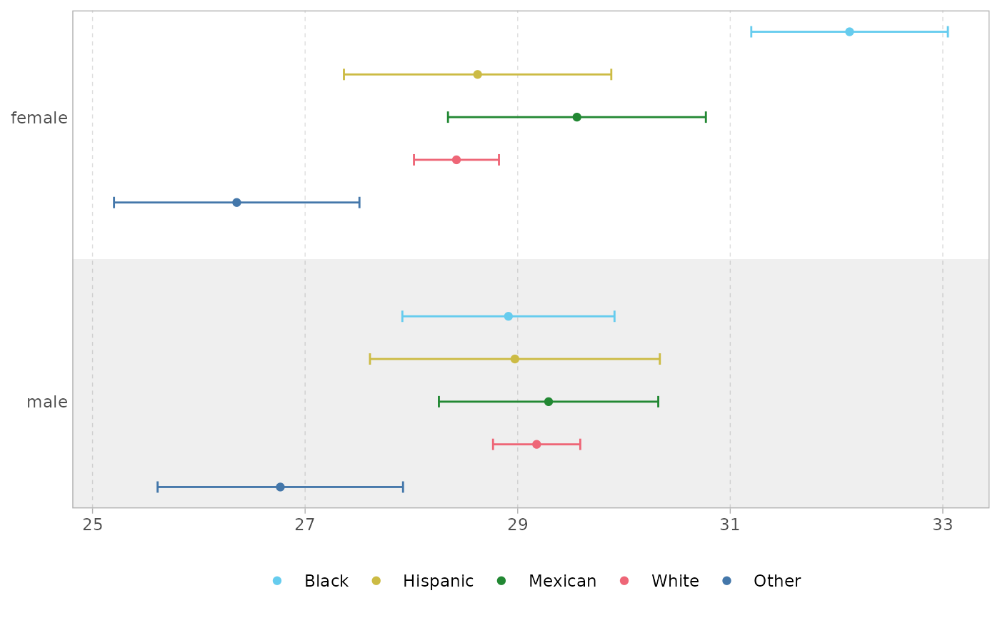
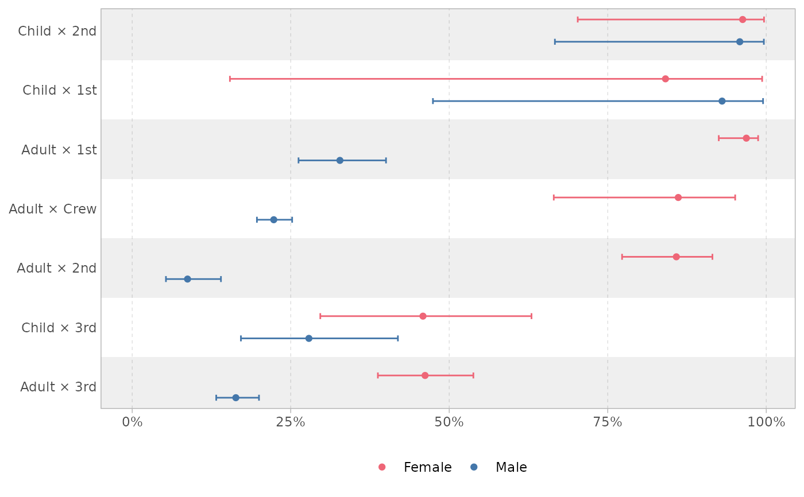
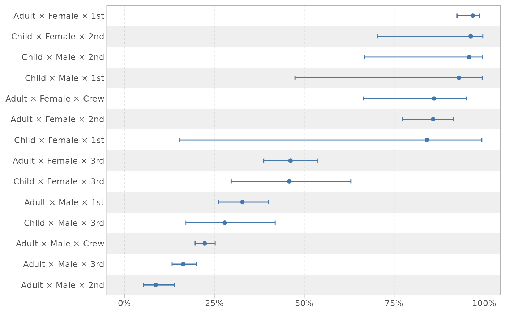
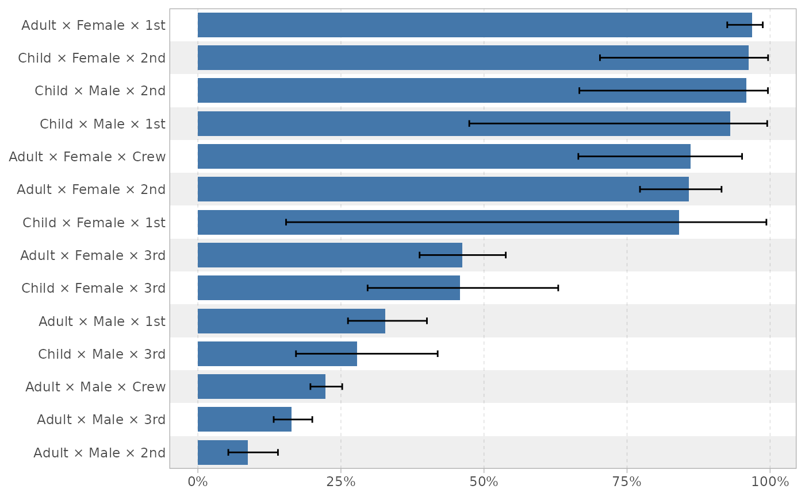
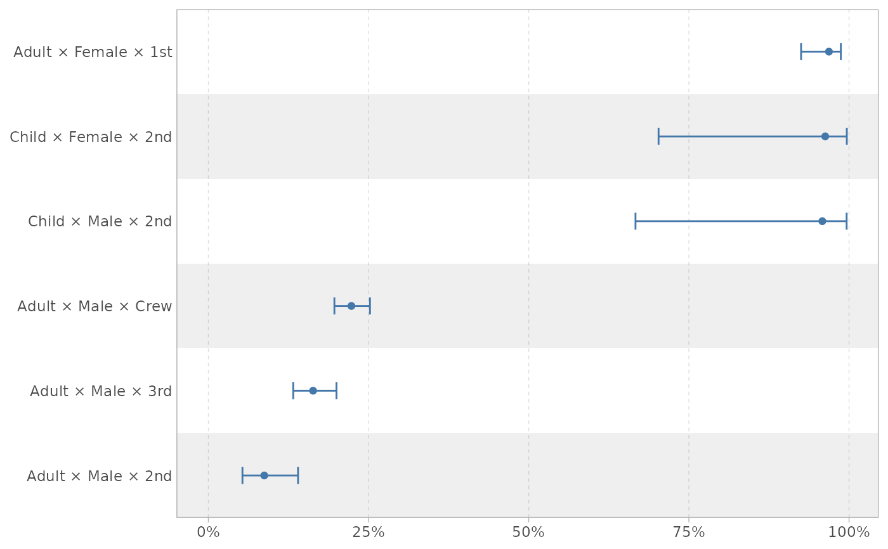
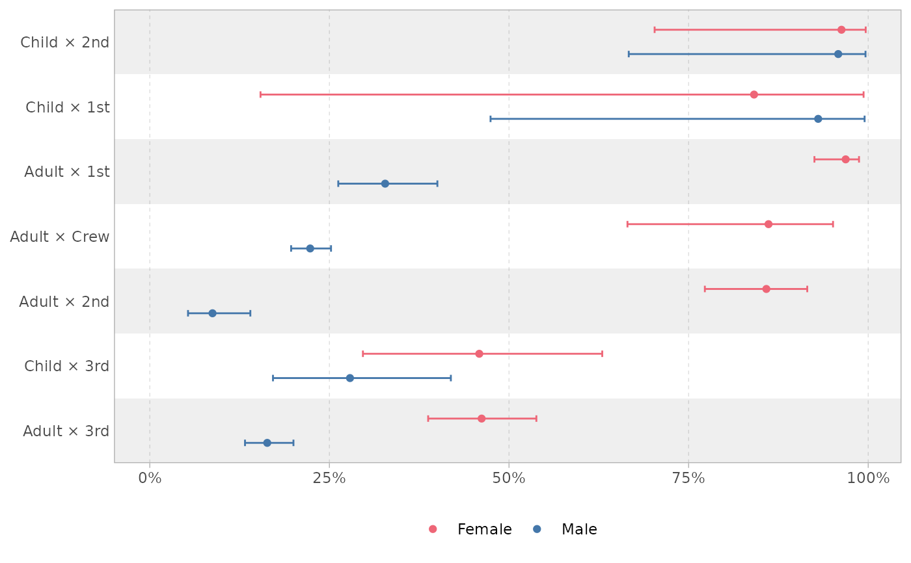
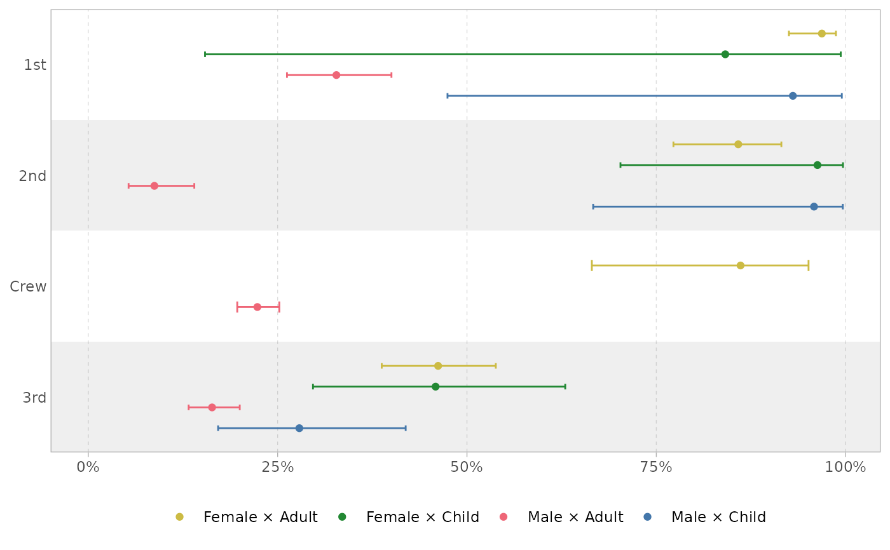
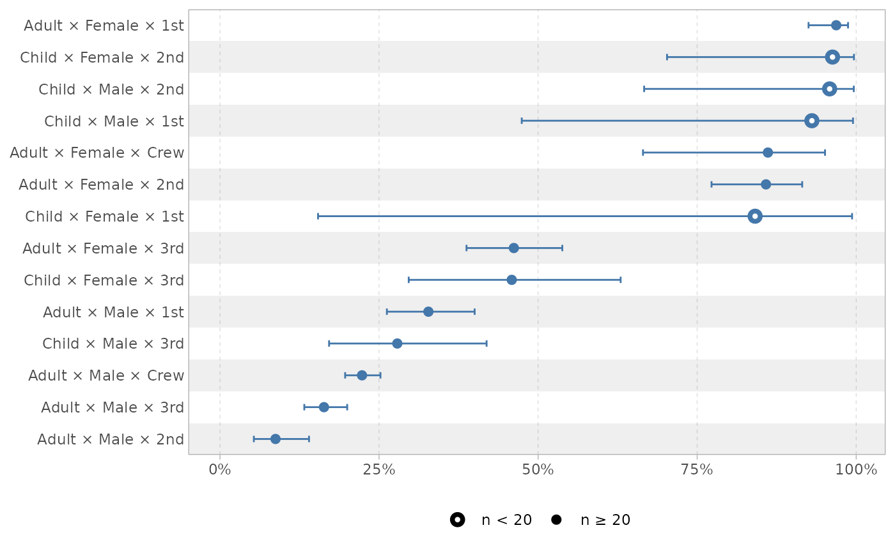
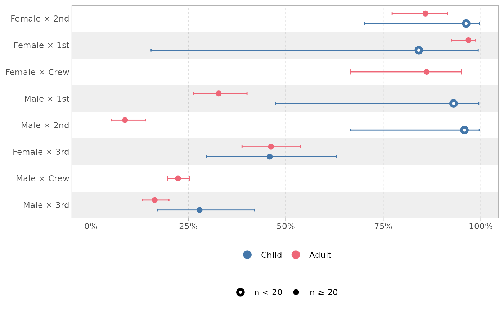
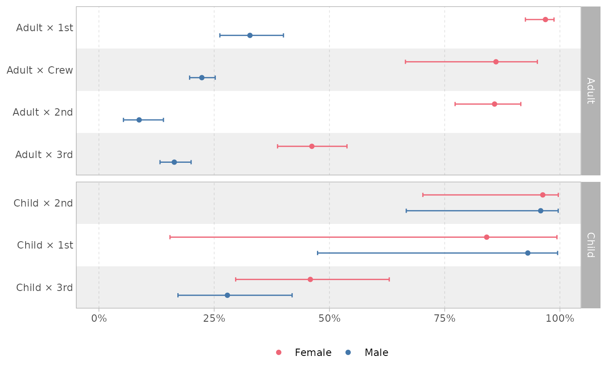

![[Experimental]](figures/lifecycle-experimental.svg)
Helpers to generate formatted tables of a MAIHDA analysis as proposed by
Evans et al. (SSM - Population Health 2024,
doi:10.1016/j.ssmph.2024.101664
).
It relies on the MAIHDA package. This package
being under active development, the proposed functions here are experimental.
Usage
tbl_maihda(
x,
conf.level = 0.95,
...,
global_p = FALSE,
bootstrap_vpc = FALSE,
bootstrap_pcv = FALSE,
n_boot = 1000,
twomodels_labels = c("Null model", "Adjusted model"),
statistics_header = "Summary statistics",
statistics_labels = list(bsv = "Between-stratum variance", bssd =
"Between-stratum standard deviation", vpc =
"Variance Partition Coefficient (VPC / adjusted ICC)", pcv =
"Proportional Change in Variance (PCV)", auc =
"Area Under Receiver Operating Characteristic Curve (AUC)", mor =
"Median Odds Ratio (MOR)", csvpc = "Context share (VPC)", r2cond =
"Conditional Nakagawa's R2 (fixed + random effects)", r2marg =
"Marginal Nakagawa's R2 (fixed effects only)", uicc =
"Unadjusted ICC (intraclass correlation coefficient)"),
statistics_include = -dplyr::any_of("bssd"),
notes = TRUE,
notes_labels = list(n_strata = "Strata:", nobs = "Observations:", engine = "Engine:",
family = "Family:", context = "Variable(s) in context:"),
return_data = FALSE
)
tbl_partially_adjusted_maihda(
x,
conf.level = 0.95,
...,
global_p = FALSE,
bootstrap_vpc = FALSE,
bootstrap_pcv = FALSE,
n_boot = 1000,
twomodels_labels = c("Null model", "Fully adjusted model"),
statistics_header = "Summary statistics",
statistics_labels = list(bsv = "Between-stratum variance", bssd =
"Between-stratum standard deviation", vpc = "Variance Partition Coefficient (VPC)",
pcv = "Proportional Change in Variance (PCV)", auc =
"Area Under Receiver Operating Characteristic Curve (AUC)", mor =
"Median Odds Ratio (MOR)", csvpc = "Context share (VPC)"),
statistics_include = -dplyr::any_of("bssd"),
notes = TRUE,
notes_labels = list(n_strata = "Strata:", nobs = "Observations:", engine = "Engine:",
family = "Family:", context = "Variable(s) in context:"),
return_data = FALSE
)
calculate_partially_adjusted_maihda(
x,
conf.level = 0.95,
...,
global_p = FALSE,
bootstrap_vpc = FALSE,
bootstrap_pcv = FALSE,
n_boot = 1000,
twomodels_labels = c("Null model", "Fully adjusted model")
)
tbl_strata_info(
x,
breaks = c(10, 20, 30, 50, 100),
type = c("nested", "exclusive"),
column_labels = list(size = "Sample size per stratum", n = "Number of strata", prop =
"Proportion of strata"),
total_label = "Total number of strata:"
)
tbl_strata_predictions(
x,
n_strata = Inf,
scale = c("response", "link"),
which = c("null", "adjusted"),
column_labels = list(rank = "Rank", n = "n", predicted = "Predicted", ci = "95% CI"),
group_labels = list("highest", "lowest"),
digits = 1L
)
get_strata_predictions(
x,
n_strata = Inf,
scale = c("response", "link"),
which = c("null", "adjusted"),
group_labels = list("highest", "lowest")
)
plot_strata_predictions(
x,
by = NULL,
geom = c("point", "bar"),
n_strata = Inf,
scale = c("response", "link"),
which = c("null", "adjusted"),
sort = TRUE,
highlight_n_below = NULL
)
plot_maihda_predictions_by(
x,
by = NULL,
scale = c("response", "link"),
which = c("null", "adjusted"),
sort = TRUE
)
glance_maihda_model(x, bootstrap_vpc = FALSE, conf.level = 0.95, n_boot = 1000)Arguments
- x
a MAIHDA object (
maihda_analysisormaihda_model); fortbl_maihda()it could also be a list ofmaihda_modelobjects; fortbl_partially_adjusted_maihda(), only amaihda_analysiscomputed withMAIHDA::maihda(decomposition = "two-model")is allowed; fortbl_strata_info(), the result ofMAIHDA::make_strata()is also accepted- conf.level
confidence level for confidence/credible intervals
- ...
additional parameters passed to
gtsummary::tbl_regression()- global_p
display global p-value instead of terms p-value (see
gtsummary::add_global_p()), not available ifengine = "wemix".- bootstrap_vpc
logical indicating whether to compute parametric bootstrap confidence intervals for VPC/ICC; supported only for
engine = "lme4"; when usingengine = "brms", posterior credible intervals are always returned; could be very time-consuming; cf.MAIHDA::summary.maihda_model()for more details.- bootstrap_pcv
logical indicating whether to compute bootstrap confidence intervals for the PCV; implemented only for
engine = "lme4"and ifxis anmaihda_analysisobject, otherwise PCV should be manually computed and added to models before callingtbl_maihda()(see examples); cf.MAIHDA::calculate_pcv()for more details.- n_boot
number of bootstrap samples when bootstrap is used to estimate confidence intervals
- twomodels_labels
for a two-model MAIHDA analysis, labels for the two models
- statistics_header
string header of the summary statistics
- statistics_labels
name list of labels for the summary statistics
- statistics_include
<
tidy-select>
names of summary statistics to be included: must be column names of the tibble returned byglance_maihda_model()- notes
display some notes (number of strata, of observations, engine, model family) about the analysis?
- notes_labels
name list of labels for the notes
- return_data
return a data frame instead of a table
- breaks
breaks for sample size per stratum
- type
type of table (nested or exclusive size categories)
- column_labels
named list of column labels
- total_label
string of the total label in the notes
- n_strata
number of strata to show at each end (top and bottom), use
InforNULLto show all strata- scale
Scale for the predicted stratum values:
"response"(default) or"link". For a cumulative (ordinal) model the response scale is the expected category score.- which
For a two-model analysis, which model's predictions to rank the strata by:
"null"(default) or"adjusted". Ignored for a crossed-dimensions analysis or a single model.- group_labels
labels for group names
- digits
number of decimals for predictions
- by
<
tidy-select>
list of variables to compare by- geom
geometry to use for plotting proportions ("point" by default).
- sort
should the plot be sorted?
- highlight_n_below
highlight strata with a number of observations below this number (
NULLfor not highlight, incompatible withgeom = "bar)
Details
tbl_maihda() is intended to replicate Table 3 of Evans et al. 2024, with
fixed effects, between-stratum variance and model summary statistics
including VPC (variance partition coefficient) and PCV (proportional change
in variance). It accepts a maihda_analysis object created with
MAIHDA::maihda(), a single maihda_model created with
MAIHDA::fit_maihda() or a list of several maihfda_model objects. For this
last case, PCV should be manually added to the models to be displayed (see
examples). When bootstrapped confidence intervals are requested, the
computation time could be very long. In such case, you can call
tbl_maihda() with return_data = TRUE, save the result and pass it to
tbl_maihda() to display the table.
tbl_partially_adjusted_maihda() is an helper allowing to compute and
display all partially adjusted models (see examples). When bootstrapped
confidence intervals are requested, the computation could be very long. In
such case, it could be relevant to use
calculate_partially_adjusted_maihda() to save the result of the computation
and then to pass it directly to tbl_maihda().
tbl_strata_info() is intended to replicate Table 2, showing the number of
strata having a certain sample size.
tbl_strata_predictions() is intended to replicate Table 4, showing the
strata with the highest and the lowest predicted value. If a
maihda_analysis object is passed to tbl_strata_predictions(), the null
model is taken into account by default for computing the predicted values,
following the behavior of MAIHDA::maihda_table(). It should be noted that
in Evans et al. 2024, the authors used the adjusted model, which could be
done with the argument which = "adjusted".
plot_strata_predictions() allows to visually compare predicted values
by strata according to one or several specific variable defining the strata.
To be noted, themes from the gtsummary package are taken into account for formatting the different values.
Examples
# \donttest{
theme_gtsummary_bold_labels()
# gaussian model
data("maihda_health_data", package = "MAIHDA")
a <- MAIHDA::maihda(
BMI ~ Age + Gender + Race + (1 | Gender:Race),
data = maihda_health_data
)
a |> tbl_strata_info(breaks = c(50, 100, 150))
Total number of strata: 10
a |> tbl_maihda()
Beta
95% CI
Beta
95% CI
Abbreviation: CI = Confidence Interval
Strata: 10, Observations: 3000, Engine: lme4, Family: gaussian
a |> tbl_strata_predictions()
a |> plot_strata_predictions()

a |> plot_strata_predictions(by = Race)

# a binomial example
titanic |>
MAIHDA::make_strata(c("Age", "Class")) |>
tbl_strata_info()
Total number of strata: 7
m <- MAIHDA::maihda(
Survived ~ Age + Sex + Class + (1 | Age:Sex:Class),
data = titanic,
family = binomial
)
#> Binary outcome 'Survived' recoded to 0/1: 'No' = 0 (reference), 'Yes' = 1 (modeled event). Set the factor levels (or supply a 0/1 outcome) to control which level is the event.
m |> tbl_strata_info()
Total number of strata: 14
m |> tbl_strata_info(type = "exclusive")
Total number of strata: 14
m |> tbl_maihda(exponentiate = TRUE)
OR
95% CI
p-value
OR
95% CI
p-value
Abbreviations: CI = Confidence Interval, OR = Odds Ratio
Strata: 14, Observations: 2201, Engine: lme4, Family: binomial
m |> tbl_strata_predictions(n_strata = NULL)
m |> tbl_strata_predictions(which = "adjusted", n_strata = 3)
3 highest
3 lowest
m |> plot_strata_predictions()

m |> plot_strata_predictions(geom = "bar")

m |> plot_strata_predictions(n_strata = 3L)

m |> plot_strata_predictions(by = Sex)

m |> plot_strata_predictions(by = c(Sex, Age))

m |> plot_strata_predictions(highlight_n_below = 20)

m |> plot_strata_predictions(by = Age, highlight_n_below = 20)

m |>
plot_strata_predictions(by = Sex) +
ggplot2::facet_grid(
rows = ggplot2::vars(Age),
scales = "free_y",
space = "free_y"
)

# Partially adjusted models
m0 <- MAIHDA::fit_maihda(
Survived ~ 1 + (1 | Age:Sex:Class),
data = titanic,
family = binomial
)
#> Binary outcome 'Survived' recoded to 0/1: 'No' = 0 (reference), 'Yes' = 1 (modeled event). Set the factor levels (or supply a 0/1 outcome) to control which level is the event.
m1 <- MAIHDA::fit_maihda(
Survived ~ Age + (1 | Age:Sex:Class),
data = titanic,
family = binomial
)
#> Binary outcome 'Survived' recoded to 0/1: 'No' = 0 (reference), 'Yes' = 1 (modeled event). Set the factor levels (or supply a 0/1 outcome) to control which level is the event.
m2 <- MAIHDA::fit_maihda(
Survived ~ Sex + (1 | Age:Sex:Class),
data = titanic,
family = binomial
)
#> Binary outcome 'Survived' recoded to 0/1: 'No' = 0 (reference), 'Yes' = 1 (modeled event). Set the factor levels (or supply a 0/1 outcome) to control which level is the event.
m3 <- MAIHDA::fit_maihda(
Survived ~ Class + (1 | Age:Sex:Class),
data = titanic,
family = binomial
)
#> Binary outcome 'Survived' recoded to 0/1: 'No' = 0 (reference), 'Yes' = 1 (modeled event). Set the factor levels (or supply a 0/1 outcome) to control which level is the event.
# manually adding PCV
m1$pcv <- MAIHDA::calculate_pcv(m0, m1)
m2$pcv <- MAIHDA::calculate_pcv(m0, m2)
m3$pcv <- MAIHDA::calculate_pcv(m0, m3)
list(Null = m0, Age = m1, Sex = m2, Class = m3) |>
tbl_maihda(exponentiate = TRUE, global_p = TRUE)
OR
95% CI
p-value
OR
95% CI
p-value
OR
95% CI
p-value
OR
95% CI
p-value
Abbreviations: CI = Confidence Interval, OR = Odds Ratio
Strata: 14, Observations: 2201, Engine: lme4, Family: binomial
# in one call
m |> tbl_partially_adjusted_maihda(exponentiate = TRUE)
OR
95% CI
p-value
OR
95% CI
p-value
OR
95% CI
p-value
OR
95% CI
p-value
OR
95% CI
p-value
Abbreviations: CI = Confidence Interval, OR = Odds Ratio
Strata: 14, Observations: 2201, Engine: lme4, Family: binomial
# sample-weighted data
if (rlang::is_installed("WeMix")) {
d <- titanic
d$weight <- 1
wm <- MAIHDA::maihda(
Survived ~ Age + Sex + Class + (1 | Age:Sex:Class),
data = d,
family = binomial,
sampling_weights = "weight",
engine = "wemix"
)
wm |> tbl_maihda(exponentiate = TRUE)
}
#> Binary outcome 'Survived' recoded to 0/1: 'No' = 0 (reference), 'Yes' = 1 (modeled event). Set the factor levels (or supply a 0/1 outcome) to control which level is the event.
OR
95% CI
OR
95% CI
Abbreviations: CI = Confidence Interval, OR = Odds Ratio
Strata: 14, Observations: 2201, Engine: wemix, Family: binomial
# }